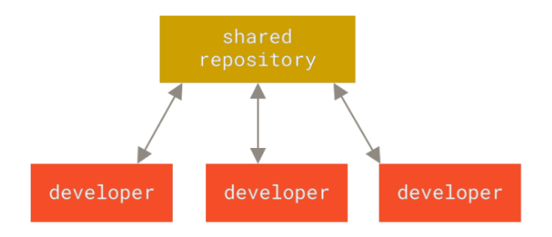
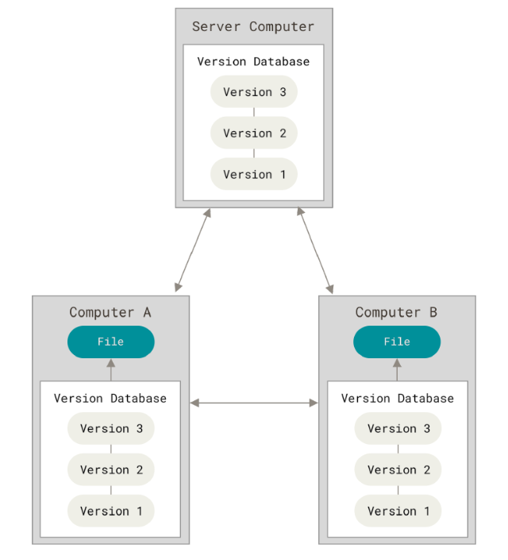

Sobre o Git
Registrar alterações ao longo do tempo para que se possa recuperar versões específicas posteriormente.
Sistemas decontrole de versão centralizados.

Sistemas decontrole de versão distribuídos.
